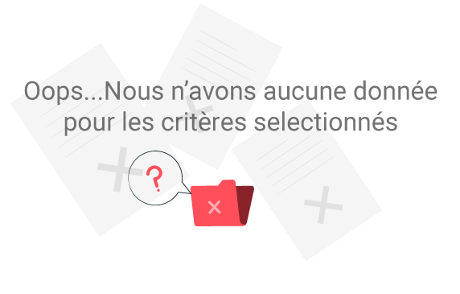

Station
https://donneespubliques.meteofrance.fr/
Courbe d'evolution de la temperature moyenne depuis:

Courbe d'evolution de la temperature minimale depuis:
Courbe d'evolution de la temperature maximale depuis:
Recherche de stations...
Bienvenue,
“Limaçon aventureux, le temps sera pluvieux.”
Filtrer l'affichage par:
Stations
Région
Températures moyennes
Temperatures maximales
Temperatures minimales
Periode: